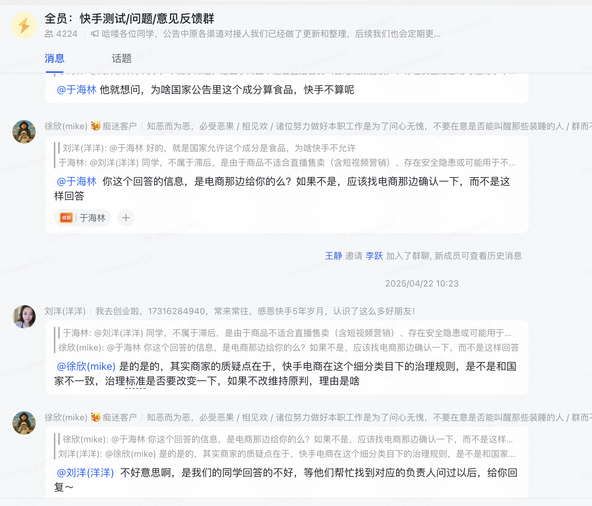
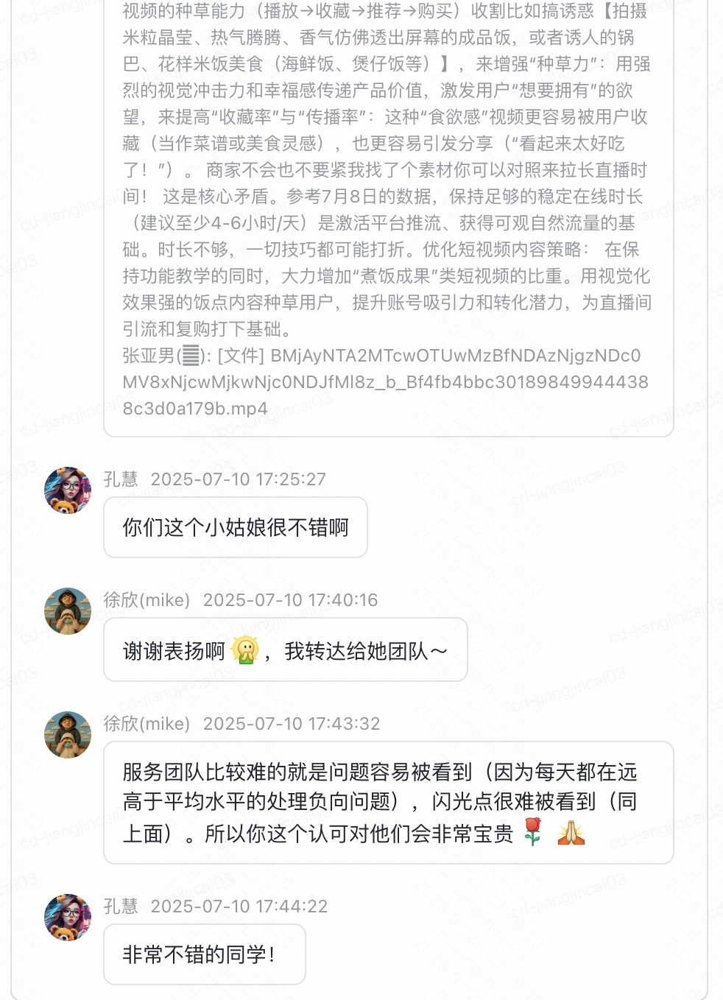

30岁 · 8年互联网经验 · 货拉拉1年 + 快手6年
从城市运营到客服服务，再到社群项目交付，一直在一线和不同角色打交道。
负责城市司机招募、站点运营和客诉处理，积累了最早的一线运营和人际沟通经验。
管理自建纠纷组，处理高危舆情回电，获得全国最美客服、守夜奖项。
负责社群项目从 10 个量级拓展到 50+ 量级，主 R 快成长项目获用户体验部年度优秀项目；同步推进 AI 在团队提效中的落地。
从 AI 刚出来就开始探索，按"提示词 → Skill → MCP → Harness-loop"4个阶段迭代，每个阶段都对应团队实际痛点并有落地产出。
在快手实际做的工作主要是和不同的人沟通让大家都能满意，所以需求洞察是核心能力。
基于对业务线指标原理的理解，在业务拓展上实现了较快增长。
覆盖社群运营、内容共创、服务交付、安全治理四个维度。
本该"制定活动→作者参与→双赢"，但创作者链路会因各种原因断掉。
通过满意度 NPS 调研，发现创作者真正想要的是数据反馈和成长路径。
在群内做调研印证猜想，说服业务方给资源做培优活动。
项目获用户体验部年度优秀项目，年终 S 级评价。
单个做不太好做大产出，需要放大机制。
调研发现 55.98% 用户对成长感兴趣（破冰 41.77% + 草根逆袭 14.21%，N=95）。
设计创作者专栏，和内容运营部负责官号同学协调，创作者作品可直发官号。
官号同学有 KPI、创作者有动力、宣发范围扩大；发掘标杆创作者「社恐的小羊」。
在全员群服务备受质疑的时候接受，通过努力把服务从"备受质疑"做到"受到认可"。


团队成员丁好的老婆是淮安市山阳小学3年级班主任，通过对12户学生家庭暑期家访，发现"视野外认知"。
欣哥认可方案，但指出不够落地。
对齐需求：了解到他们也有各平台曝光的需求。
一直在改的地方：作为 PMO 角色，把业务需求和社群能力互相翻译，过去存在"为了求快没有把为什么讲够"的问题。
对指标的时候我会传递业务侧的指标和目标，也能说清楚这个指标有什么价值、对我们有什么用，但是业务侧为什么要做实际上我没有挖清楚。
改到现在最大的收获是对业务侧运转逻辑有了更清楚的了解。例如：电商业务方从考核 GMV 到综合赋税收入，背后是商家多卖货 → 依赖投流 → 投流要生产能力 → 回归成本效率本质，一个人做会让商家在合适成本下把货卖给更多人。
以下为详细简历内容，覆盖个人信息、工作经历和教育经历。
8年互联网运营经验，6年体验工作经历，客服组长→社群项目督导。擅长跨部门协作、指标拆解与诊断、证明项目价值，同时深度参与内容型平台各个业务线价值共创，深刻理解业务逻辑，了解 Agent 运行原理并有 AI 提效的结果。
运营用户规模 2w 人，项目季度流水规模数 5.1 亿元，季度归因流水近 931 万元，25 年获得 L4 负责人年度 S 级评价 6 项。
负责 2000 平米、50+ 员工超市全面运营管理，项目投资 1800w。